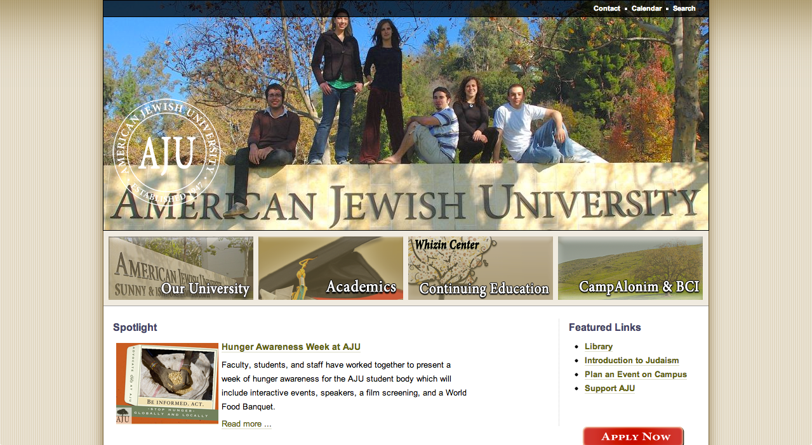
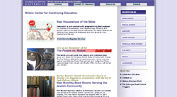
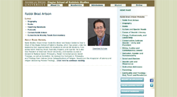

Max's Portfolio
Current Projects
ajula.edu
American Jewish University Website

I add and maintain content for the university homepage at the request of the departments and prgrams under the university's umbrella. Content includes basic html pages, jQuery slideshows and photo galleries, and registration and on line order forms written in VB.Net. Content is managed through a CMS.
wcce.ajula.edu
The Whizen Center for Continuing Education

A subsite of ajula.edu for the Whizen Center for Continuing Education at the American Jewish University. This is the largest program in the university, offering continuing edcuation classes and preforming arts events for the greater Los Angeles community.
I created the style and appearance initially by re-coloring assests from another subsite, and then created the layout as a PSD mock-up and refined from there. This subsite is also the first to use CSS3 gradients in the sidebar and for buttons and is the first subsite to be converted to a SCSS codebase.
www.bradartson.com
A simple faculty subsite for the Dean of the Ziegler School of Rabbinic Studies to host his info and teaching resources. I continue to manage the content for this page
 ,
,